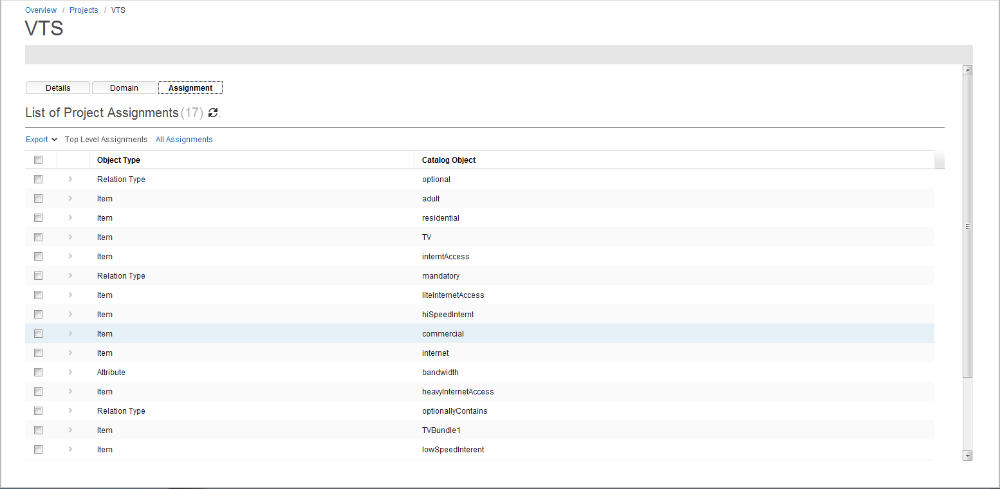
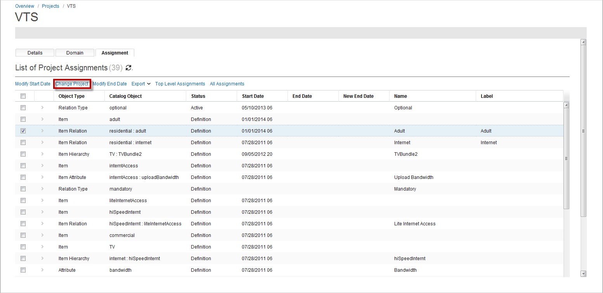
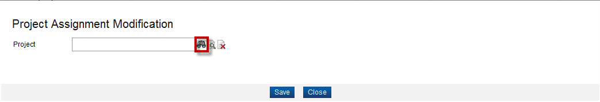
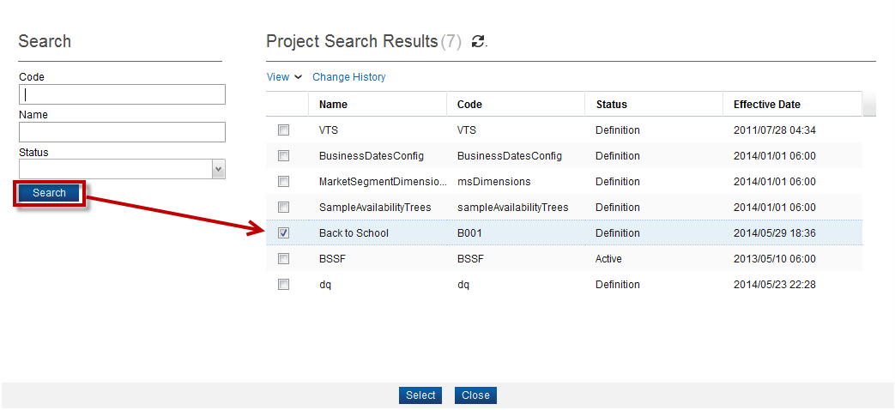

Project Assignments
In Catalog Designer, you can move a list of catalog objects or associations from one project to another project by completing these steps:
- Open a project, click your current project's name from the menu bar, and then click Manage to view your project's details.
- Click the Assignment tab. By default, your view lists all top-level assignments. Click All Assignments to see the complete list of assignments that are available.

- Select the checkbox next to the objects that you want to move, and then click Change Project.

- From the Project Assignment Modifications dialog, click the Search button to launch the Product finder.

- Click the Search button to list all projects. Proceed to select the project that you want, and then click the Select button.

- The Project Assignment Modifications reappears. The Project field contains your selected project. Click the Save button to continue.
- The Assignment tab appears, which has been refreshed. The objects that you have selected to move no longer appear on this page, meaning that they have been successfully moved to your chosen project.
|